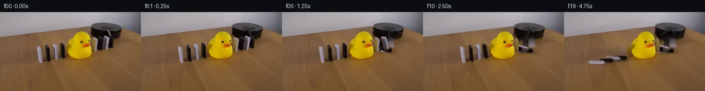

![首帧]()

Round 00
2026-11-04T23:12:57.136473+00:00像素候选变化代码 +231/−0inspection 更新
pixels 067a9ab0e627f646 · code a009680723a9e7f7
查看本轮 generate.py 真实 diff
--- previous/generate.py +++ current/generate.py @@ -0,0 +1,231 @@ +#!/usr/bin/env python3 +"""Generate the 20-frame PixelWorld continuation from the supplied photograph. + +The animation is deliberately image-based: domino pixels are cut from frame 0, +their old locations are locally inpainted, and each cutout is rotated about its +table contact point. Nothing outside the supplied image is used. +""" + +from pathlib import Path +import cv2 +import numpy as np +from PIL import Image, ImageDraw, ImageFont + +import artifact_io + + +ROOT = Path(__file__).resolve().parent +W, H = 256, 144 + + +def smoothstep(x): + x = np.clip(x, 0.0, 1.0) + return x * x * (3.0 - 2.0 * x) + + +def polygon_mask(points, feather=0.65): + """Return a softly antialiased mask while keeping coordinates reproducible.""" + scale = 4 + mask = np.zeros((H * scale, W * scale), np.uint8) + pts = np.rint(np.asarray(points, np.float32) * scale).astype(np.int32) + cv2.fillPoly(mask, [pts], 255, lineType=cv2.LINE_AA) + mask = cv2.resize(mask, (W, H), interpolation=cv2.INTER_AREA) + if feather: + mask = cv2.GaussianBlur(mask, (0, 0), feather) + return mask + + +def rotate_layer(rgb, alpha, pivot, degrees): + matrix = cv2.getRotationMatrix2D(tuple(map(float, pivot)), float(degrees), 1.0) + moved_rgb = cv2.warpAffine( + rgb, matrix, (W, H), flags=cv2.INTER_CUBIC, + borderMode=cv2.BORDER_REFLECT_101, + ) + moved_alpha = cv2.warpAffine( + alpha, matrix, (W, H), flags=cv2.INTER_CUBIC, + borderMode=cv2.BORDER_CONSTANT, borderValue=0, + ) + return moved_rgb, moved_alpha + + +def alpha_over(base, layer, alpha): + a = alpha.astype(np.float32)[..., None] / 255.0 + return np.clip(base.astype(np.float32) * (1.0 - a) + layer.astype(np.float32) * a, + 0, 255).astype(np.uint8) + + +def erase_object(frame, alpha): + # A slightly expanded mask removes the photographed antialiased edge and + # contact shadow before the piece is redrawn in its moved pose. + core = cv2.dilate((alpha > 20).astype(np.uint8) * 255, + cv2.getStructuringElement(cv2.MORPH_ELLIPSE, (5, 5))) + return cv2.inpaint(frame, core, 4, cv2.INPAINT_TELEA) + + +def darken_shadow(frame, alpha, angle): + # Soft table shadow cast just down-camera from a moving domino. + shadow = cv2.GaussianBlur(alpha, (0, 0), 1.45) + matrix = np.float32([[1, 0, 1.2 + 0.012 * angle], [0, 1, 2.0]]) + shadow = cv2.warpAffine(shadow, matrix, (W, H), flags=cv2.INTER_LINEAR, + borderMode=cv2.BORDER_CONSTANT, borderValue=0) + amount = (shadow.astype(np.float32) / 255.0 * 0.22)[..., None] + return np.clip(frame.astype(np.float32) * (1.0 - amount), 0, 255).astype(np.uint8) + + +def duck_occlusion_mask(source): + """Find and fill the connected yellow/orange duck silhouette.""" + hsv = cv2.cvtColor(source, cv2.COLOR_RGB2HSV) + # Saturated yellow body plus saturated orange bill; the wooden table is + # substantially less saturated than these rubber surfaces. + colored = (((hsv[..., 0] >= 15) & (hsv[..., 0] <= 38) & + (hsv[..., 1] > 120) & (hsv[..., 2] > 100)) | + ((hsv[..., 0] < 15) & (hsv[..., 1] > 145) & + (hsv[..., 2] > 100))).astype(np.uint8) * 255 + # Restrict seed geometry to the known central subject. + roi = np.zeros_like(colored) + roi[32:89, 118:172] = 255 + colored &= roi … diff truncated; 144 more lines …